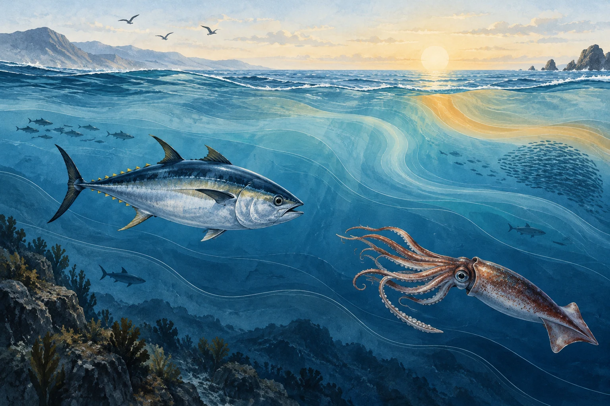
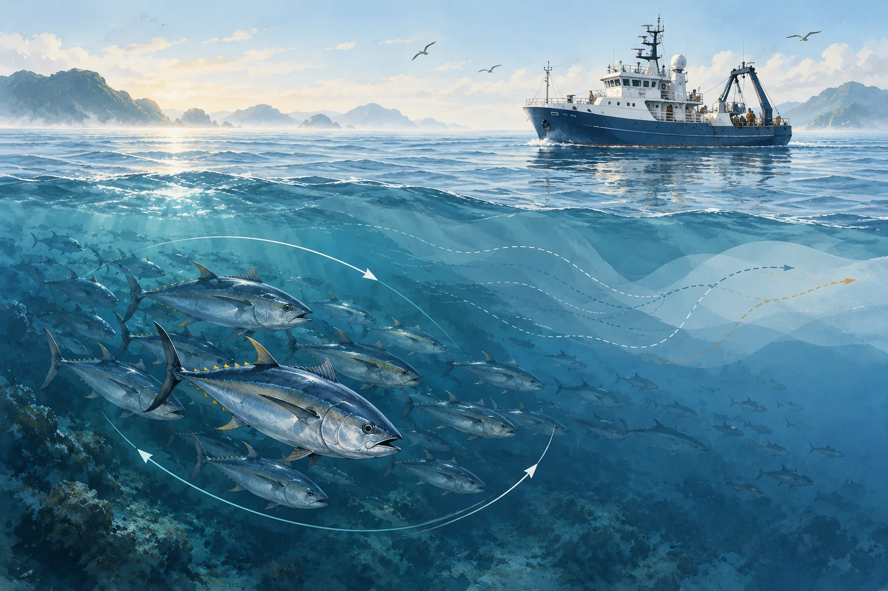

01 / Populations
Population dynamics & stock assessment
Developing quantitative models to understand fish populations, growth, recruitment, and mortality.
Quantitative methodsOur research
Three core research areas, connected by ocean change and adaptive fisheries management.
Developing quantitative models to understand fish populations, growth, recruitment, and mortality.
Quantitative methods
Using artificial intelligence and vessel-tracking data to investigate fishing activity, fleet dynamics, and patterns of fishing effort.
Fisheries data science
Connecting life-history traits, biological observations, and DNA-based evidence to investigate population structure and marine biodiversity.
From organisms to populationsConnected perspectives

Studying how environmental variability shapes the abundance, distribution, and life histories of marine species.

Evaluating management approaches that respond to changing populations, ecosystems, and uncertainty.